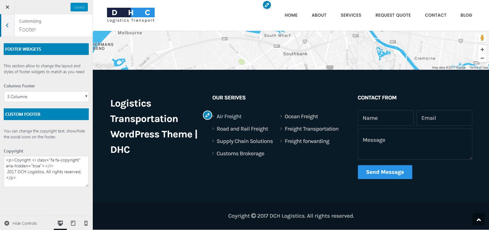
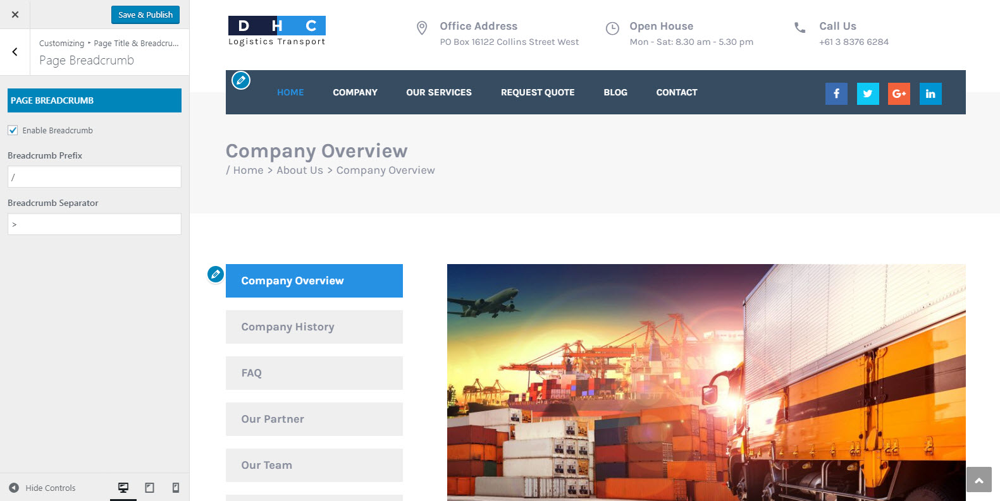

DHC
Logistics Transportation WordPress Theme DHC
- Created date: May 25, 2017
- Last update: May 26, 2017
- Author: themesflat
- Email: themesflat@gmail.com
- We would like to thank you for purchasing DHC Logistics WordPress Theme! We are very pleased you have chosen DHC Logistics WordPress Theme for your website, you will be never disappointe! Before you get started, please be sure to always check out this documentation. We outline all kinds of good information, and provide you with all the details you need to use DHC Logistics. DHC Logistics can only be used with WordPress and we assume that you already have WordPress installed and ready to go. If you are unable to find your answer here in our documentation, please contact us email: themesflat@gmail.com. We encourage you to contact us through themeforest item support page with your site CPanel (or FTP) and WordPress admin details. We're very happy to help you and you will get reply from us more faster than you expected. Thank you, we hope you to enjoy using DHC Logistics!
Getting Started
Requirements
- PHP 5.3 or higher
- MySQL 5.0 or higher
- GD Library
- Self-Hosted WordPress 4.5.x
Forum Support
Recommended
Our theme requires a couple of following plugins to work properly
- Slider Revolution Responsive WordPress Plugin
- themesflat plugin by themesflat
Besides, our product is also compatible with these plugins to provide you more function in use
- Contact Form 7
- Woocommerce
Theme Installation via WordPress
Once you've downloaded the installation file on ThemeForest, extract it and locate a file called DHC.zip. You can install the theme by using one of two installation methods.
Please, follow the steps below to install DHC Logistics.
Install by WordPress Theme Manager
This is probably the simplest way for most users. Here are steps you need to take:
- Step 1 - Login to your WordPress Dashboard.
- Step 2 - Go to Appearance > Themes. And then click Add new button, located at the top of the screen or Add new theme (see screenshots below).
- Step 3 - Click on Upload button at the top of the screen.
- Step 4 - Next, Click Choose File button to browse FO.zip file in locate.
- Step 5 - Click Install button and wait a moment.
- Step 6 - After done installing, click Activate to publish the theme.
- Step 7 - After activating the theme a notice should appear on the top of the screen, click on link Begin installing plugins (see screenshots below).
- Step 8 - After install plugins, go to Dashboard > Appearance > Install Plugins, check all the plugins you want to activate require for this theme

After installing the DHC Main theme, you should install and active the DHC Child theme.
This action will protect your code customization whenever Main theme is updated.
The theme requires the following plugin: Meta Box, Revslider, themesflat and shortcodes for F&O by themesflat, and recommends the following plugins: Contact Form 7, WooCommerce, MailChimp for WordPress.., Recent Tweets Widget..
Install Sample Data
Install through FTP upload
If you want to install via FTP, here are 3 steps you need to take:
- Using FTP client, login to the server where your WordPress website is hosted
- Using FTP client, navigate to the /wp-content/themes/ directory under your WordPress website's root directory
- Using FTP client, upload the DHC directory to themes directory on remote servers
Once installation is complete, your DHC theme will be ready to use.
Setup homepage
To set up the homepage you must create a new page, you can do so by navigating to Pages > Add New.The title for this page can be up to your liking. Under Settings -> Reading please setup the new Homepage.
Theme Customize
To start customizing DHC Logistics theme, in the Admin page please go to Dashboard > Appearance > Customize
Please remember to click Save & Publish button after done customizing to save the changes
These are global settings so its effect is site-wide. These settings can be overridden in single post or page
General
-
Site Information
-
Site Name: You can setup and change your sitename
-
Site Tagline: A few words to describe your site
To Customize Theme you go to: Dashboarb -> Appearance -> Customize
-
-
Social & Favicon
Socials: Input link your socials display in website Favicon: You change Favicon for your website.You navigation Dashboard --> Apprearence --> Customize --> Change Site icon to change Favicon for your website.
Header
To setup header layout, please navigate to Dashboard > Appearance > Customize > Header section and choose one of available layouts. You can setup some other options we listed below:
-
Custom Logo
-
Use Logo Image: When this option was turned on, the logo on header will be use as a custom image instead of your site name
- Display Site Tagline: Turn on this option to show site tagline below logo on the header
- Logo: Drag or select your new logo here
- Logo Margin: Input the top/bottom margin for logo
-
-
Header style
- Header Style 1
- Header Style 2
- Header Style 3
- Header Style 4
- Enable Sticky Header: Make the Heaher stick to the top page or not
-
Top bar
- Enable Topbar: Enable top bar or not
- Enable Content Right On Top: Enable Content Right On Top or not
- Topbar Backgound: Set background for top bar
- Topbar Text Color : Set text color for top bar
- Content Left: Replace content for Left top bar
- Content Right: Replace content for Right top bar
- Enable Social On Top: Enable Social Links on top bar or not
Footer
Footer was divided into 2 different sections: Widgets & Content. The screenshot below will give you an explanation of these sections:

-
Footer Widgets
- Widgets Layout Select stlye for footer default , 1, 2, 3, 4 columns
- Footer BackgoundSelect background color for footer
- Text Color: Select the text color for this section
-
Custom Footer
- Footer Widget: This section allow to change the layout and styles of footer widgets to match as you need.
- Enable Social Links:Show/hide the social icons on the footer.
- Copyright: Input information you want to display on footer copyright area
- Bottom BackgoundSelect background color for Bottom
- Bottom Text Color: Select the text color for this section
Typography
- Body Font: You can select Font family, Font size Font weight or Font color for the body text
- Headings Font: You can select Font family, Font weight or Font size for the heading text, modify the font options for your headings. h1, h2, h3, h4, ...
- Menu Font: You can select Font family, Font size, Font weight or Font color for the menu text
Blog

-
Blog List
- List Layout: Select layout style for List (List/Grid)
- List Sidebar Position: Select sidebar position on the posts page
- Blog List Sidebar: In the dropdown box, select the sidebar you want to display on posts page
- Auto Post Excepts: When you turn on this option, the post's content will be truncated automatically on posts page
- Post Excepts Length: This option is only available when you turn on "Auto Post Excepts". It uses to limit the content length which is shown on posts page
- Show Post Meta: Turn on/off to show/hide the post meta
- Show Read More: Turn on/off to show/hide Read more button
- Read More Text: You can modify the text of Read more button here
- Pagination Style: Select the style of pagination links on posts page
- Posts Per Page: Input how many posts will be displayed per posts page

-
Blog Single
- Single Sidebar Position: Select sidebar position on each single blog post (No Sidebar/Left/Right)
- Show Related Posts: Turn ON to show the related posts box
- Related Posts Style: Select style for the related posts box (Grid/Carousel)
- Columns Of Related Posts: Select how many columns will be displayed on the related posts box.
- Number Of Related Posts: Enter the number of posts you want to display on the related posts box
Layout & Styles
In the section Layout & Styles, we provide some options to customize the theme layout and styles.
-
Scheme Color
With this option, you can change unlimited color for your site
With this option, you can change unlimited color for your Top Menu
With this option, you can change unlimited color for your footer
-
Page Title
- Setting Page Title for your website such as color, overlay ...
-
Breadcrumb
- Enable Breadcrumbs: Turn on/off to show/hide the breadcrumbs
- Breadcrumb Prefix: Enter prefix text for the breadcrumb
- Breadcrumb Separator: Enter the character you want to use as the separator of breadcrumb

-
Menu Color
- Mainnav a color: Set color for element
- Under Format section, there is a section called Categories, select the category you want to assign to this post. Alternatively, if you'd like to create a new category, click on "+ Add New Category" A text field will unfold where you can enter a name for the category.
- Then click on "Add New Category".
- Once selected the category you want, click the "Publish button".
- Under the Categories section are the Tags and Featured Image sections. Here you can add some tags to your post, and upload an image which will be displayed as the Featured Image (the representative image) of the post in the blog list pages.
Now, you've finished the setup for your blog post.
Pages Configuration
Creating your own page has been never so easy. To make the first step please go to Pages > Add new. At first sight, everything looks just like in default WordPress. But when you look at Visual/HTML area you will see some Page options or on Page Attribute panel, you will see some Page's templates which we explain below.
Page Templates
When creating a new page, one of the first things you might want to do is to assign a suitable template for it. To do this, please find the Page Attributes section on the right of the page editor. It comes with a variety of templates to choose:
- Default Template: Choose this one if you want to create a standard page
- Blog: Choose this one if you want to create a page for listing blog posts
- Page - Blank: Choose this one if you want to create a page without header and footer
- Page - Fullwidth: Choose this one if you want to create a page which its content will stretch to fit the browser's width
- Projects: Choose this one if you want to create a page for listing projects
Page Options
Beside the page templates, we provide some special options to customize the page. All page options will be overridden by the global options of the theme. With "Blog" and "Projects" templates we have two separate sections with options for customizing.
- Sidebar Position: Select the position of sidebar you want to display (Default/No Sidebar/Left/Right)
- Page Title: When enable this option, you can override the page title settings
- Breadcrumbs: Select the Breadcrumb state (Default/Enabled/Disabled)
- Navigator: Select the menu you want to display it on location of Primary Menu
Shortcodes
Contact Form
Contact form is not a built-in feature (for many reasons) so we recommend you should use a third-party plugin. The free one we suggest is Contact Form 7 which can be used to add forms anywhere in your site!

MailChimp for WordPress
<h3> subscribe </h3>
<p>
<label>Subscribe to get the latest </label>
<input type="email" name="EMAIL" placeholder="Enter your email address" required />
</p>
<p>
<input type="submit" value="Sign up" />
</p>
After install and config bellow code you please enter The API key for connecting with your MailChimp account.Get your API key here.
Translation
- Download and install Poedit at https://poedit.net/download. Open file FO.pot in "/wp-content/themes/FO/languages" folder and edit into your language. See WordPress in your language for more details about file name.
- Open file wp-config.php in your WordPress root folder and add the line define('WPLANG', ''); remember replace '' by the language you want. See Installing WordPress in Your Language for more details.
Credits
Images
- Photos: The images used on the demo site are for demonstration purposes only and are not included in the download file.
-
Icons Font
- Font-Awesome (http://fontawesome.io/)
-
Javascript
- jQuery (http://jquery.com/)
- jQuery UI (http://jqueryui.com/)
- jQuery Countdown (http://rendro.github.io/countdown/)
- jQuery CounterUp (https://github.com/bfintal/Counter-Up)
- Flexslider (http://flexslider.woothemes.com)
- Isotope (http://isotope.metafizzy.co/)
- WayPoints (http://imakewebthings.com/jquery-waypoints/)
- PrettyPhoto (http://www.no-margin-for-errors.com/projects/prettyphoto-jquery-lightbox-clone/)
- Images Loaded (http://desandro.github.io/imagesloaded/)
- FitVids (http://fitvidsjs.com/)
- OWL Carousel (http://owlgraphic.com/owlcarousel/)